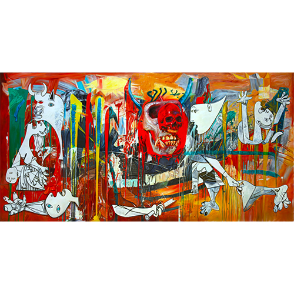

Exhibitions
English Translation Series, Pop Life Global Q Plex, Shenzhen, China, June 21–July 14, 2019.
Literature
Ron English, English Translation Series (Dongguan City, Guangdong, PRC: PopLife GLOBAL, n.d.), p. 18.
Notes
The work is documented in the printed exhibition booklet English Translation Series, which also serves as evidence of its inclusion in the exhibition.
This work references Pablo Picasso’s Guernica.

This work references Jean-Michel Basquiat’s Untitled; a representative image is available here.
Ancillary Documentation